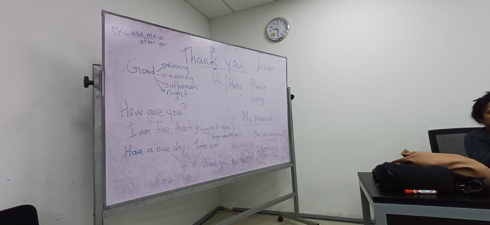
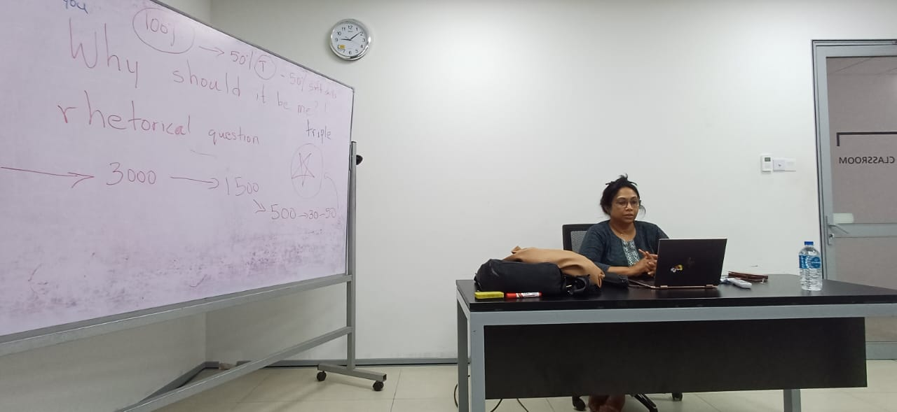
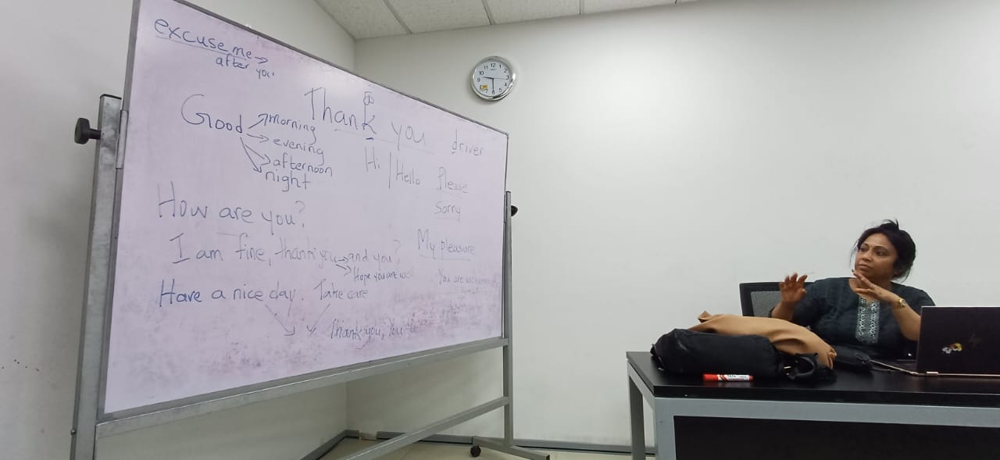

Week 2 - Networking and Organizational Perspectives
Session Details
Date: 8th Feb 2025
Resource Person: Ms. Suba Francis
Designation: Guest Lecturer
Topic: Networking and Organizational Perspectives
Topic Summary
- Ms. Suba Francis delivered an engaging and thought-provoking session focused on self-awareness, character development, and the art of networking.
- She emphasized the importance of soft skills and professional etiquette in building a successful career.
What Was Taught
- The session covered key aspects of professional behavior, including telephone etiquette, expressing gratitude, maintaining a professional appearance, and treating everyone with respect.
- Ms. Francis highlighted the role of non-verbal communication, such as maintaining eye contact, using appropriate gestures, and adopting confident posture.
- She posed rhetorical questions like “Why should it be you?” to encourage self-reflection on personal value and uniqueness.
- A memorable quote was, “Know something like the back of your hand,” emphasizing deep knowledge and confidence.
What Was Learned
- I realized the critical role of non-verbal communication in making a positive impression.
- The session taught me that soft skills, combined with English proficiency, form a “magical combination” for professional success.
- I understood the importance of networking and building genuine relationships in organizational settings.
What I Plan to Implement in the Future
- I will practice professional manners, such as proper telephone etiquette and expressing gratitude, in both academic and professional interactions.
- I’ll work on improving my body language, particularly eye contact and posture, to project confidence.
- I plan to attend networking events to build connections and apply these skills in real-world scenarios.
Session Images

Session Image 1

Session Image 2

Session Image 3